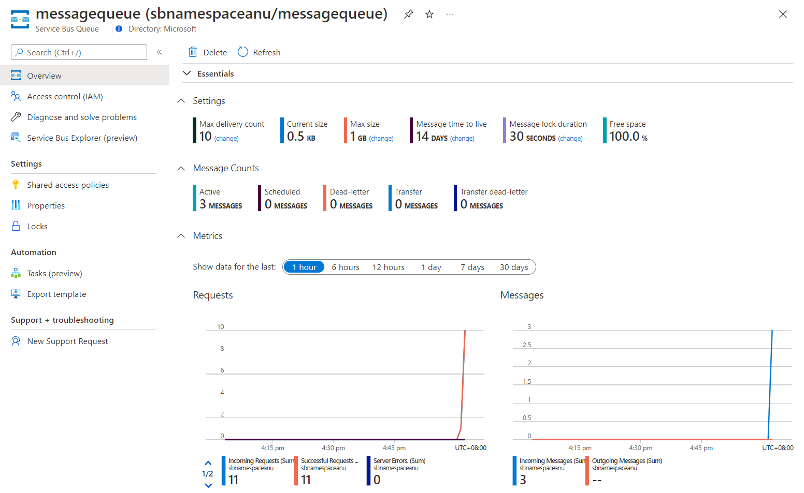
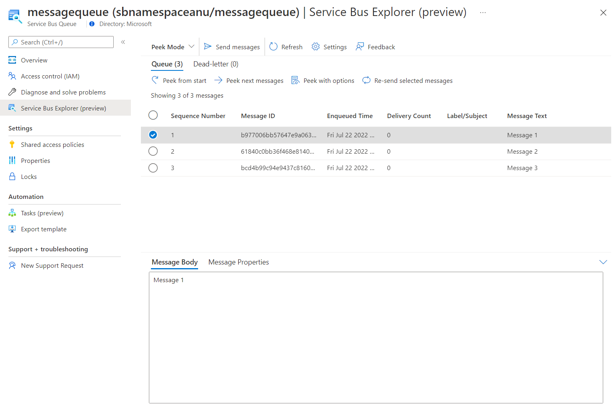

Lab 2: Create a .NET Core project to publish messages to a Service Bus queue
Task 1: Create a .NET Core project
From the lab computer, start Visual Studio Code.
In Visual Studio Code, in the File menu, select Open Folder.
In the Open Folder window, browse to $HOME\training-az204\Labs\10\Starter\MessagePublisher, and then select Select Folder.
In the Visual Studio Code window, activate the shortcut menu, and then select Open in Integrated Terminal.
At the terminal prompt, run the following command to create a new .NET project named MessagePublisher in the current folder:
dotnet new console --framework net6.0 --name MessagePublisher --output .Note: The dotnet new command will create a new console project in a folder with the same name as the project.
Run the following command to import version 7.8.1 of the Azure.Messaging.ServiceBus package from NuGet:
dotnet add package Azure.Messaging.ServiceBus --version 7.8.1Note: The dotnet add package command will add the Azure.Messaging.ServiceBus package from NuGet. For more information, go to Azure.Messaging.ServiceBus.
At the terminal prompt, run the following command to build the .NET Core console application:
dotnet buildSelect Kill Terminal (the Recycle Bin icon) to close the terminal pane and any associated processes.
Task 2: Publish messages to an Azure Service Bus queue
In the Explorer pane of the Visual Studio Code window, open the Program.cs file.
On the code editor tab for the Program.cs file, delete all the code in the existing file.
Add the following lines of code to facilitate the use of the built-in namespaces that will be referenced in this file:
using System; using System.Threading.Tasks;Add the following code to import the Azure.Messaging.ServiceBus namespace included in the Azure. .Queues package imported from NuGet:
using Azure.Messaging.ServiceBus;Enter the following code to create a new Program class in the MessagePublisher namespace:
namespace MessagePublisher { public class Program { } }In the Program class, enter the following code to create a string constant named storageConnectionString:
private const string serviceBusConnectionString = "";Update the serviceBusConnectionString string constant by setting its value to Primary Connection String of the Service Bus namespace you recorded earlier in this lab.
Enter the following code to create a string constant named queueName with a value of messagequeue, matching the name of the Service Bus queue you created earlier in this exercise.
private const string queueName = "messagequeue";Enter the following code to create an integer constant which stores the number of messages to be sent to the target queue:
private const int numOfMessages = 3;Enter the following code to create a Service Bus client that will own the connection to the target queue:
static ServiceBusClient client;Enter the following code to create a Service Bus sender that will be used to publish messages to the target queue:
static ServiceBusSender sender;Enter the following code to create an asynchronous Main method:
public static async Task Main(string[] args) { }Review the Program.cs file, which should now include the following code. Note that the
<serviceBus-connection-string>placeholder represents the connection string to the target Azure Service Bus namespace:using System; using System.Threading.Tasks; using Azure.Messaging.ServiceBus; namespace MessagePublisher { public class Program { private const string serviceBusConnectionString = "<serviceBus-connection-string>"; private const string queueName = "messagequeue"; private const int numOfMessages = 3; static ServiceBusClient client = default!; static ServiceBusSender sender = default!; public static async Task Main(string[] args) { } } }In the Main method, add the following code to initialize client of type ServiceBusClient that will provide connectivity to the Service Bus namespace and sender that will be responsible for sending messages:
client = new ServiceBusClient(serviceBusConnectionString); sender = client.CreateSender(queueName);Note: The Service Bus client is safe to cache and use as a singleton for the lifetime of the application. This is considered one of the best practices when publishing and reading messages on a regular basis.
In the Main method, add the following code to create a ServiceBusMessageBatch object that will allow you to combine multiple messages into a batch by using the TryAddMessage method:
using ServiceBusMessageBatch messageBatch = await sender.CreateMessageBatchAsync();In the Main method, add the following lines of code to add messages to a batch and throw an exception if a message size exceeds the limits supported by the batch:
for (int i = 1; i <= numOfMessages; i++) { if (!messageBatch.TryAddMessage(new ServiceBusMessage($"Message {i}"))) { throw new Exception($"The message {i} is too large to fit in the batch."); } }In the Main method, add the following lines of code to create a try block, with sender asynchronously publishing messages in the batch to the target queue:
try { await sender.SendMessagesAsync(messageBatch); Console.WriteLine($"A batch of {numOfMessages} messages has been published to the queue."); }In the Main method, add the following lines of code to create a finally block that asynchronously disposes of the sender and client objects, releasing any network and unmanaged resources:
finally { await sender.DisposeAsync(); await client.DisposeAsync(); }Review the Main method, which should now consist of the following code:
public static async Task Main(string[] args) { client = new ServiceBusClient(serviceBusConnectionString); sender = client.CreateSender(queueName); using ServiceBusMessageBatch messageBatch = await sender.CreateMessageBatchAsync(); for (int i = 1; i <= numOfMessages; i++) { if (!messageBatch.TryAddMessage(new ServiceBusMessage($"Message {i}"))) { throw new Exception($"The message {i} is too large to fit in the batch."); } } try { await sender.SendMessagesAsync(messageBatch); Console.WriteLine($"A batch of {numOfMessages} messages has been published to the queue."); } finally { await sender.DisposeAsync(); await client.DisposeAsync(); } }Save the Program.cs file.
In the Visual Studio Code window, activate the shortcut menu, and then select Open in Integrated Terminal.
At the terminal prompt, run the following command to launch the .NET Core console app:
dotnet runNote: If you encounter any errors, review the Program.cs file in the $HOME\training-az204\Labs\10\Solution\MessagePublisher folder.
Verify that the console message displayed at the terminal prompt states that a batch of three messages has been published to queue.
Select Kill Terminal (the Recycle Bin icon) to close the terminal pane and any associated processes.
Switch to the Microsoft Edge browser displaying the Service Bus queue messagequeue in the Azure portal.
Review the Essentials pane and note that the queue contains three active messages.
The following screenshot displays the Service Bus queue metrics and message count.

Select Service Bus Explorer (preview) blade.
On the Peek Mode tab header and, on the Queue tab, select the Peek from start button.
Verify that the queue contains three messages.
Select the first message and review its content in the Message pane.
The following screenshot displays the first message's content.

Close the Message pane.
Review
In this exercise, you configured your .NET project that published messages into an Azure Service Bus queue.